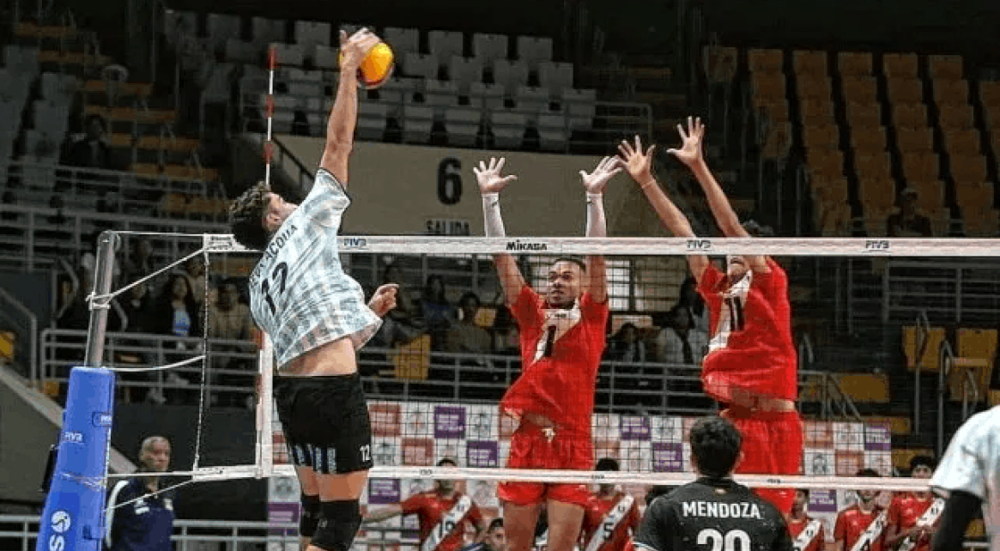
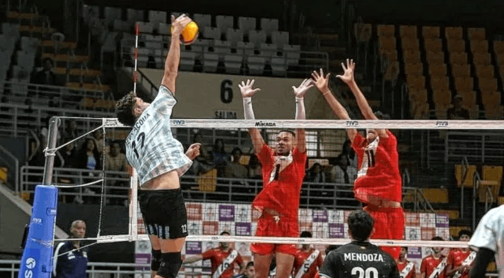

Argentina ya conoce la hoja de
ruta de la VNL 2025.
 

Argentina conoce el camino que transitará en la Liga de Naciones de Voleibol 2025 (VNL).
Dicha competencia comenzará el 11 de junio. La primera fase se disputará en tres weeks
hasta el 20 de julio y las finales (con sede a confirmar) serán del 30 de julio al 3 de
agosto.
El camino de Argentina.
La Selección masculina comenzará su camino en la VNL en Canadá, en la ciudad de Quebec,
donde jugará del 11 al 15 de junio.
Más tarde, Belgrado (Serbia) será sede del Week 2 para Argentina entre el 25 y 29 de
junio y, el cierre de la fase inicial será en Kanto (Japón) del 15 al 20 de julio.
En esta primera fase de tres weeks, cada Selección disputará un total de 12 partidos
para definir los clasificados a la fase final.
Nuevo formato de la Liga de Nacionales de Vóley.
En esta oportunidad la Federación Internacional de Vóleibol extendió la cantidad de
participantes de 16 a 18 seleccionados participantes. Junto a la Argentina, los países
que disputarán la Liga de las Naciones serán Alemania, Brasil, Bulgaria, Cuba, Estados
Unidos, Italia, Canadá, Irán, Eslovenia, Turquía, Japón, Países Bajos, Polonia, Serbia,
China, Ucrania, y Francia, que llega como campeón vigente.